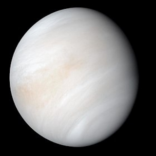

Quais são os Planetas do Sistema Solar

Mercúrio
Mercúrio normalmente se perde no intenso brilho solar, exceto em eclipses solares, só pode ser observado a olho nu durante o crepúsculo matutino ou vespertino.
CARACTERÍSTICAS
| Planeta: | Planeta Rochoso |
| Diâmetro: | 4.879 km |
| Gravidade: | 3,7 m/s² |
| Massa: | 3,285 × 10^23 kg |
| Rotação: | 59 dias |
| Translação: | 88 dias |
| Temperatura: | Média: 166ºC Mínima: -183ºC Máxima: 426ºC |
Vênus
Vênus atinge seu brilho máximo algumas horas antes da alvorada ou depois do ocaso, sendo por isso conhecido como a estrela da manhã (Estrela d'Alva) ou estrela da tarde (Vésper); também é chamado Estrela do Pastor.
CARACTERÍSTICAS
| Planeta: | Planeta Rochoso |
| Diâmetro: | 12.104 km |
| Gravidade: | 8,87 m/s² |
| Massa: | 4,868 × 10^24 kg |
| Rotação: | 243 dias |
| Translação: | 225 dias |
| Temperatura: | 462°C |
Terra
As propriedades físicas do planeta Terra, bem como sua história geológica e órbita, permitiram que a vida persistisse durante este período. Acredita-se que a Terra poderá suportar vida durante pelo menos outros 500 milhões de anos.
CARACTERÍSTICAS
| Planeta: | Planeta Rochoso |
| Diâmetro: | 12.755 km |
| Gravidade: | 9,8 m/s² |
| Massa: | 5,973 × 10^24 kg |
| Rotação: | 23h 56 |
| Translação: | 365 dias 6 horas |
| Temperatura: | Média: 14ºC Mínima: -93ºC Máxima: 58ºC |
Marte
Batizado em homenagem ao deus romano da guerra, muitas vezes é descrito como o "Planeta Vermelho", porque o óxido de ferro predominante em sua superfície lhe dá uma aparência avermelhada.
CARACTERÍSTICAS
| Planeta: | Planeta Rochoso |
| Diâmetro: | 6.792 km |
| Gravidade: | 3,7 m/s² |
| Massa: | 3,285 × 10^23 kg |
| Rotação: | 24h 37m |
| Translação: | 687 dias |
| Temperatura: | Média: -63ºC Mínima: -143ºC Máxima: 35ºC |
Júpiter
É um planeta gasoso, junto com Saturno, Urano e Netuno. Estes quatro planetas são por vezes chamados de planetas jupiterianos ou planetas jovianos, e são os quatro gigantes gasosos, isto é, que não são compostos primariamente de matéria sólida.
CARACTERÍSTICAS
| Planeta: | Planeta Gasoso |
| Diâmetro: | 142.984 km |
| Gravidade: | 25 m/s² |
| Massa: | 1,898 × 10^27 kg |
| Rotação: | 9h 55m |
| Translação: | 12 anos |
| Temperatura: | Média: -108ºC |
Saturno
Saturno é o sexto planeta a partir do Sol e o segundo maior do Sistema Solar atrás de Júpiter. Pertencente ao grupo dos gigantes gasosos, possui cerca de 95 massas terrestres e orbita a uma distância média de 9,5 unidades astronômicas.
CARACTERÍSTICAS
| Planeta: | Planeta Gasoso |
| Diâmetro: | 120.536 km |
| Gravidade: | 10 m/s² |
| Massa: | 5,684 × 10^26 kg |
| Rotação: | 10h 39m |
| Translação: | 29 anos |
| Temperatura: | Média: -139ºC |
Urano
Foi nomeado em homenagem ao deus grego do céu, Urano. Embora seja visível a olho nu em boas condições de visualização, não foi reconhecido pelos astrônomos antigos como um planeta devido a seu pequeno brilho e lenta órbita.
CARACTERÍSTICAS
| Planeta: | Planeta Gasoso |
| Diâmetro: | 51.118 km |
| Gravidade: | 8,7 m/s² |
| Massa: | 8,681 × 10^25 kg |
| Rotação: | 17h 14m |
| Translação: | 84 anos |
| Temperatura: | Média: -220ºC |
Netuno
Netuno pertencente ao grupo dos gigantes gasosos, possui um tamanho ligeiramente menor que o de Urano, mas maior massa, equivalente a 17 massas terrestres. Netuno órbita o Sol a uma distância média de 30,1 unidades astronômicas.
CARACTERÍSTICAS
| Planeta: | Planeta Gasoso |
| Diâmetro: | 49.528 km |
| Gravidade: | 11,2 m/s² |
| Massa: | 1,023 × 10^26 kg |
| Rotação: | 16h 06m |
| Translação: | 88 anos |
| Temperatura: | Média: -201ºC |